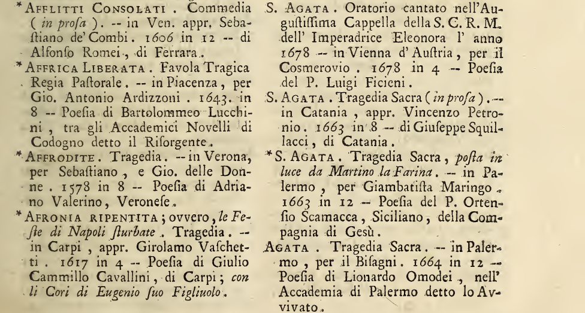

Leone Allacci's Drammaturgia
The Drammaturgia is a bibliography of theatrical works in Italian, both published and unpublished, compiled by Leone Allacci and Angelico Aprosio between 1654 and 1666 - the year of its princeps by Mascardi in Rome. The volume's purpose is stated in the publisher's introduction, which can be read down below. Plays are listed alphabetically and followed by various indexes, tracing the names and surnames of the writers, their provenance, the plays' topics, but also the names of works mentioned in other repertoires but unpublished and the variants in titles.
Despite its list-like nature, the text enjoyed an unexpected success, but the lack of reprints and the difficulty in finding copies of the repertoire eventually motivated its mid eighteenth-century revival. A group of literati from the circle of Apostolo Zeno, a renowned Venetian poet and librettist, was responsible for preparing a new updated edition, published in 1755 by Pasquali. The publisher's preface offers more pieces of information on the genesis of the opera. In this edition, details from the indexes of the princeps are merged into the main list, ordained by titles and rich in details - with room for the new compilers' thoughts on editorial, stylistic, and thematic aspects.
The 1755 Drammaturgia presents itself as a sort of database ante litteram, since it is characterised by a coherent and repetitive structure, ordered alphabetically and mostly organic in the use of diacritical marks to distinguish sections. In most cases, a period follows the title, then the indication of the genre is given with the meter; two hyphens precede the publishing specifics (city, printer, year, and format); references to the author and his origins complete the entry.
